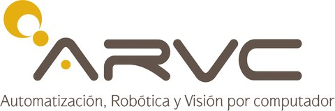

<div class="content-shell">
  <main class="about-main">

    {% capture about_body %}
      <div id="about-body-text">
        <p>This tool is part of a PhD thesis in robotics, computer vision, and artificial intelligence at the <strong>Universidad Miguel Hernández de Elche (UMH)</strong>, Spain. The thesis focuses on multispectral fusion techniques for detection tasks on mobile robots.</p>
        <p>This web demonstrates <strong>static early fusion</strong> methods that combine visible (RGB) and long-wave infrared (LWIR) thermal images at the pixel level, before any feature extraction, showing how each method exploits the complementary information of the two spectra.</p>
        <p>Developed within the <strong>ARVC</strong> (Automation, Robotics and Computer Vision) research group, part of the <strong><a href="{{ page.i3e_url }}" target="_blank" rel="noopener noreferrer">I3E</a></strong> research institute at UMH.</p>
      </div>
      <div class="about-logos">
        <a href="{{ page.umh_url }}" target="_blank" rel="noopener noreferrer" class="about-logo-link" aria-label="Universidad Miguel Hernández de Elche">
          
        </a>
        <a href="{{ page.i3e_url }}" target="_blank" rel="noopener noreferrer" class="about-logo-link" aria-label="I3E — Instituto de Investigación e Innovación en Ingeniería, UMH">
          
        </a>
        <a href="{{ page.arvc_url }}" target="_blank" rel="noopener noreferrer" class="about-logo-link" aria-label="ARVC — Automation, Robotics and Computer Vision">
          
        </a>
      </div>
    {% endcapture %}
    {% include widgets/widget_content_box.html
      title="About"
      title_id="about-section-title"
      title_tone="accent"
      panel_class="intro-panel"
      body=about_body
    %}

  </main>
</div>
